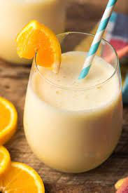

Orange Julius (boozy)

Delicious Boozy Orange Julius Made With Rum
I grew up making this delicious recipe. When I got older I realized I could modify the recipe in order to get schwaaaasted.
All you need are the ingredients below and a blender.
Ingredients
- 1 6oz can of frozen orange juice concentrate
- 1 cup of milk
- 1 cup of Kraken Rum
- 1/2 cup of sugar
- 1 tsp of vanilla extract
- 14+ ice cubes
Steps
- Add all the ingredients in the blender (initally we'll use around 14 ice cubes
- Blend the ingredients
- Check consistency
- Add ice cubes and reblend until desired consitency is reached
- Serve and be schwasteeeed, me boy